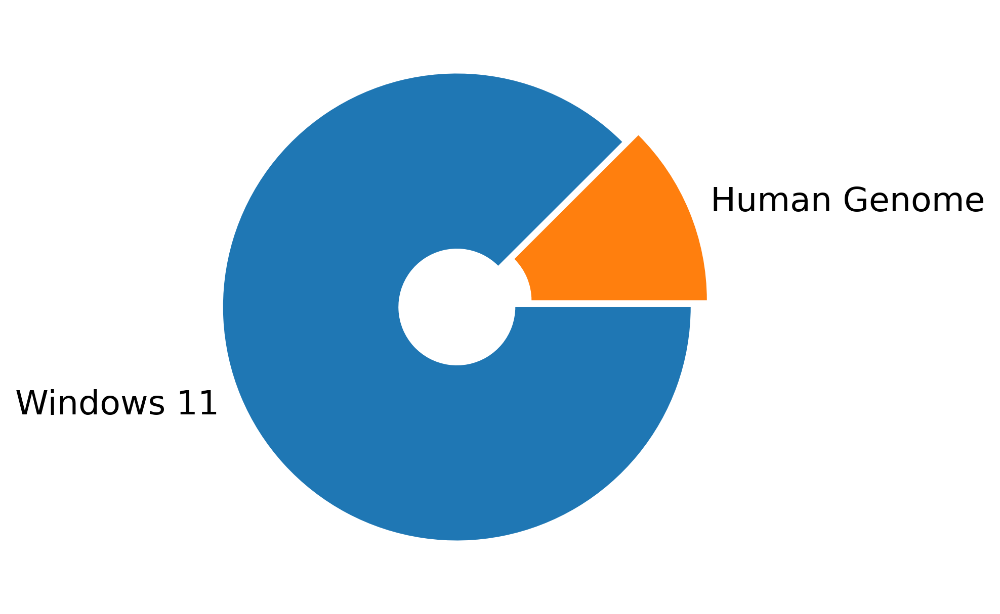

import matplotlib.pyplot as pltsizes = [7, 1] # sizes in GBlabels = ["Windows 11", "Human Genome"]explode = [0, 0.075]fig, ax = plt.subplots()wedges, texts = ax.pie(sizes, labels=labels, explode=explode, wedgeprops =dict(width=0.75), startangle=45) for t in texts: t.set_fontsize(16)plt.show()

Your Genome Is Not Big !
Data Rates
Domain
Open Formats
Proprietary Formats
Typical Rates
Audio
FLAC, WAV
(MP3), M4A (Apple), WMA (Microsoft)
1–10 MB/min
Video
WebM/VP9
(MP4/H.264), MOV (Apple), WMV (Microsoft)
10 MB/min (HD) → GBs/min (4K+)
Internet (Common Crawl)
WARC (HTTP)
-
100 TB/ month ~ 2GB/min
Genomics (sequencing machines)
FASTQ, VCF, BAM, …
BCL (Illumina), pod5 (ONT)
34 GB/min → 2 GB/min
Earth Observation System (NASA)
HDF5
-
?? → 2 GB/min
Particle physics (CERN LHC)
ROOT
-
1 PB/s → 2000 GB/min
Square Kilometer Array
HDF5, FITS
-
75 TB/min → 1 TB/min
Note
on-the-fly processing for large data
ship metadata with data
avoid data duplication
compression
Data I/O
There are several ways to get data into RAM for analysis
tabular data
Code
import pandas as pd# from local paths or URLurl="https://github.com/thomasmanke/DataSets/raw/refs/heads/main/iris.csv.gz"df = pd.read_csv(url, compression="gzip")print(df.head()) # A glimpse
== Iris - Missing Values ==
Sepal.Length 0
Sepal.Width 0
Petal.Length 0
Petal.Width 0
Species 0
dtype: int64
== Iris - Statistical Summmary ==
Sepal.Length Sepal.Width Petal.Length Petal.Width Species
count 150.000000 150.000000 150.000000 150.000000 150
unique NaN NaN NaN NaN 3
top NaN NaN NaN NaN setosa
freq NaN NaN NaN NaN 50
mean 5.843333 3.057333 3.758000 1.199333 NaN
std 0.828066 0.435866 1.765298 0.762238 NaN
min 4.300000 2.000000 1.000000 0.100000 NaN
25% 5.100000 2.800000 1.600000 0.300000 NaN
50% 5.800000 3.000000 4.350000 1.300000 NaN
75% 6.400000 3.300000 5.100000 1.800000 NaN
max 7.900000 4.400000 6.900000 2.500000 NaN
Data \(\gg\) Numbers
subject experise required \(\to\) information on iris can be found here